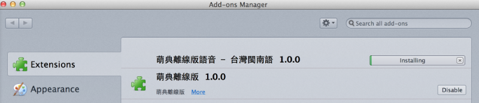

萌典桌面版（Windows / MacOSX / Linux）
桌面版本可離線使用，無需網路環境也可使用
萌典共收錄十六萬筆國語、兩萬筆台語、一萬四千筆客語條目，並支援「自動完成」功能及「%_ *? ^.$」等萬用字元。 定義裡的每個字詞都可以點擊連到說明。 源碼、其他平台版本、API 及原始資料等，均可在 3du.tw 取得。
軟體主畫面
完美結合 https://moedict.tw/ 所有功能，提供您各作業系統離線使用。

擴充套件安裝
可隨您需要，安裝擴充套件（如：離線語音包）。

下載執行檔案
Windows 版本
-
主程式(ZIP) (78.9 MB)
MD5: f7ba6677e5fff46379077785e2b0e332 -
主程式+台灣閩南語 同捆包(ZIP) (351 MB)
MD5: 61edd48ce247617b8681764840903571
MacOSX 版本
-
主程式 (83.0 MB)
MD5: 08158533d1c70168194da2fc9e938cea
Linux 版本
-
主程式(32-bit) (63.1 MB)
MD5: deb14e8ddfb6dc83d20b06e1a47fedf1 -
主程式(64-bit) (62.3 MB)
MD5: 3b01aee973795e4555dfb984c4e7597e
擴充套件
語音包
-
國語 (2.3 GB)
MD5: ed7e1e3c4070d4c528c321fda2662340 -
台灣閩南語 (286.7 MB)
MD5: 4b9809b118fbe6ca60572cce355225f4
網路資源包
-
維基多語詞典 (10.4 KB)
MD5: 6f8d66a24a77aac2bc099dfe8b76d85a
萌典桌面版是基於 [XULApp StarterKit] 開發。
感謝 #g0v.tw 頻道內所有協助開發的朋友們。
CC0 1.0 公眾領域貢獻宣告
作者 林慶忠(racklin@gmail.com) 在法律許可的範圍內，拋棄此著作依著作權法所享有之權利，包括所有相關與鄰接的法律權利，並宣告將該著作貢獻至公眾領域。